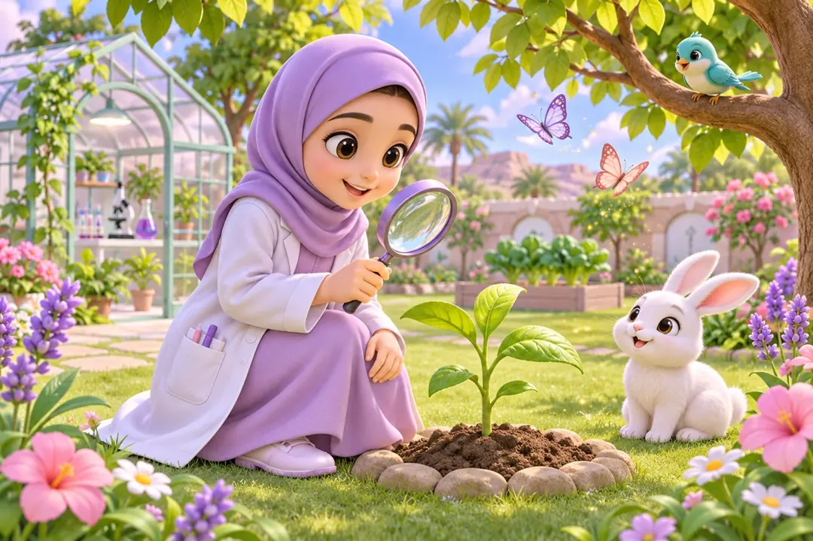

الصوت يبدأ مع أول ضغطة
رحلة صغيرة… واكتشافات كبيرة
اكتشفي، العبي، وتعلّمي!
رحلة شيّقة في علوم الصف الثالث الابتدائي. اختاري وحدتك ودرسك، وتحدّي نفسك في ثلاث ألعاب تفاعلية مع نجوم ونتائج فورية.
٣وحدات تعليمية
١٢درسًا
٣٦لعبة تفاعلية
٠ ⭐نجومك المجمّعة

أي عالم بنكتشف اليوم؟
اختاري وحدة، ثم درسًا، وابدئي مغامرة التعلّم.
فعّل JavaScript في المتصفح لتشغيل الألعاب.